FAQs¶
What should I do when the message configure: error: no acceptable C compiler found in $PATH is displayed during Python 3 installation?
Symptom
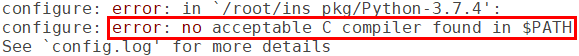
Possible Causes
gcc is not installed.
Solutions
Run the apt-get install gcc command to install gcc online.
After the installation, reinstall Python 3.
What should I do when the message -bash: make: command not found is displayed during Python 3 installation?
Symptom
Possible Causes
make is not installed.
Solutions
Run the apt-get install make command to install make online.
After the installation, reinstall Python 3.
What should I do when the message zlib not available is displayed during Python 3 installation?
Symptom
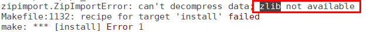
Possible Causes
zlib is not installed.
Solutions
Solution 1: Run the apt-get install zlib command to install zlib online.
Solution 2: If the software source does not contain zlib, download the source code from http://www.zlib.net/.
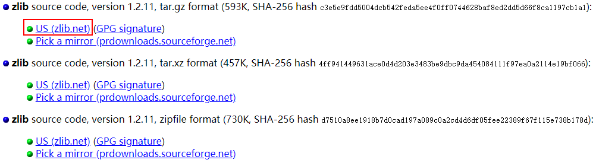
Then run the following commands to install zlib offline:
# tar xvf zlib-1.2.11.tar.gz # cd zlib-1.2.11 # ./configure # make && make install
After the installation, reinstall Python 3.
What should I do when the message No module named ‘_ctypes’ is displayed during Python 3 installation?
Symptom
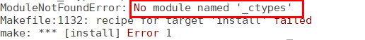
Possible Causes
libffi and libffi-devel are not installed.
Solutions
Run the apt-get install libffi* -y command to install libffi and libffi-devel online.
After the installation, reinstall Python 3.
What should I do when the message No module named ‘Crypto’ is displayed during compilation and building?
Symptom
Possible Causes
Crypto is not installed.
Solutions
Solution 1: Run the pip3 install Crypto command to install Crypto online.
Solution 2: Install Crypto offline.
Download the source code from https://pypi.org/project/pycrypto/#files.
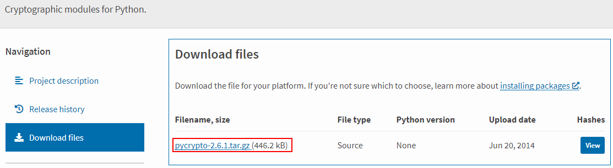
Save the source code package to the Linux server, decompress the package, and run the python3 setup.py install command to install Crypto.
Rebuild an environment.
What should I do when the message No module named ‘ecdsa’ is displayed during compilation and building?
Symptom
Possible Causes
ecdsa is not installed.
Solutions
Solution 1: Run the pip3 install ecdsa command to install ecdsa online.
Solution 2: Install ecdsa offline.
Download the installation package from https://pypi.org/project/ecdsa/#files.
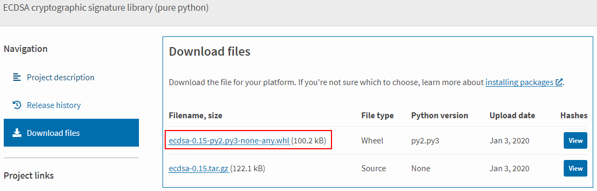
Save the installation package to the Linux server and run the pip3 install ecdsa-0.15-py2.py3-none-any.whl command to install ecdsa.
Rebuild an environment.
What should I do when the message Could not find a version that satisfies the requirement six>=1.9.0 is displayed during compilation and building?
Symptom
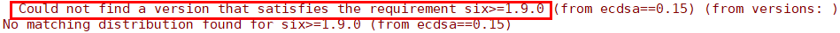
Possible Causes
six is not installed.
Solutions
Solution 1: Run the pip3 install six command to install six online.
Solution 2: Install six offline.
Download the installation package from https://pypi.org/project/six/#files.
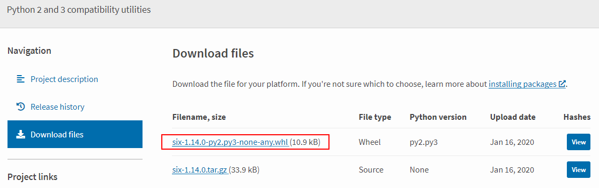
Save the source code to the Linux server and run the pip3 install six-1.14.0-py2.py3-none-any.whl command to install six.
Rebuild an environment.
What should I do when the message cannot find -lgcc is displayed during compilation and building?
Symptom
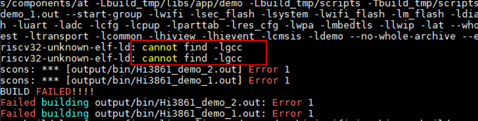
Possible Causes
The PATH is incorrectly written by gcc_riscv32, as shown in the following figure. There is an extra slash (/).
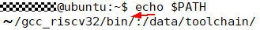
Solutions
Modify the PATH by deleting the slash (/).
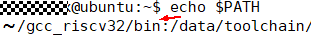
What should I do when the message indicating Python cannot be found is displayed during compilation and building?
Symptom

Possible Cause 1: Python is not installed.
Solutions
Install Python by referring to Installing a Python Environment.
Possible Cause 2: The soft link that points to the Python does not exist in the usr/bin directory.

Solutions
Run the following commands:
# cd /usr/bin/ # which python3 # ln -s /usr/local/bin/python3 python # python --version
Example:

What should I do when an error with lsb_release occurs during kconfiglib installation?
Symptom
The following error information is displayed during kconfiglib installation:
“subprocess.CalledProcessError: Command ‘(’lsb_release’, ‘-a’)’ returned non-zero exit status 1.”
Possible Causes
The Python version matched with the lsb_release module is different from the current Python version.
Solutions
Run the find / -name lsb_release command, for example, sudo rm -rf /usr/bin/lsb_release to locate and delete lsb_release.